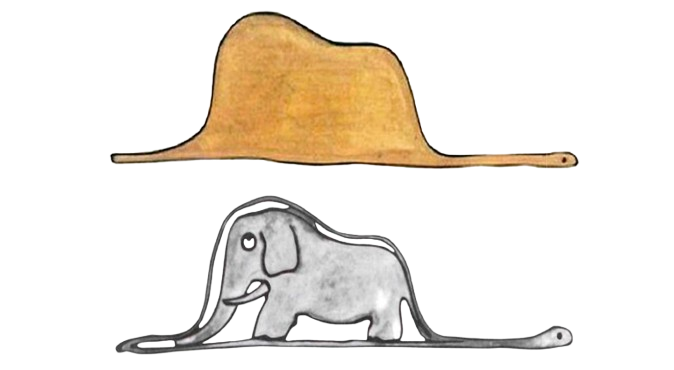

Desarrollo (Parte 1)
He aquí un hombre con un alma de infante
dentro de sí, un adulto en edad que se
encontraba en un mundo lleno de formalidades
impuestas por la madurez. Él tenía una prueba
para cada hombre con quien se envolvía en una
conversación. ¿Qué es lo que ves aquí?

Por una sola imagen se puede deducir el estado
interno de una persona. ¿Qué se puede
apreciar? ¿Un sombrero o un elefante tragado por una boa? A simple vista, no es sencillo deducir
la segunda opción, pero el Principito derrumba todo con una sola frase: “Lo esencial es invisible a
los ojos”.
La historia se desenvuelve en un viaje entre planetas, impulsado por una naturaleza curiosa, la de
un pequeño hombre con la invaluable virtud de la niñez y la curiosidad. En esta travesía, visita seis
planetas y termina en la Tierra.
Un rey, un vanidoso, un bebedor, un hombre de negocios, un farolero y un geógrafo: seres que, de
manera literal, vivían en su mundo, en el cual creían ejercer una labor importante, un trabajo al
cual dedicaban todos sus esfuerzos. Tanto era su compromiso que los visitantes les parecían una
idea extraña, una sorpresa para la mayoría. El rey veía en el visitante un súbdito, algo que
necesitaba para poder ejercer su autoridad. Un rey no es nadie en un planeta vacío; antes y después
de la partida del Principito, este ser enfrentaba una tarea vana. El vanidoso necesitaba de un
admirador, alguien que lo observara, pues sin alguien que lo admirara, su vanidad carecía de
objetivo o razón. El bebedor, que tenía vergüenza de beber, bebía para olvidar esa vergüenza, un
circulo sin respuestas, un absurdo con sentido para él. El hombre de negocios se decía poseedor
de las estrellas sin haberlas tocado, reduciendo todo a números en sus aspiraciones: tiempo es
dinero, dinero es vida, vida es mi razón de ser. El farolero, quien debía encender y apagar su farol
a cada instante, veía cómo su planeta giraba cada vez más rápido, haciendo su tarea aún más
demandante y aunque las puestas de sol eran bellas, no podía apreciarlas por su ocupación.
Finalmente, el geógrafo, quien registraba lo que los aventureros le contaban.
Cada uno de estos encuentros trajo nuevo conocimiento sobre la vida de sus semejantes. El
Principito poseía una virtud: su ligereza de alma y su profunda curiosidad. Esto se contradice un
poco cuando conoce al zorro, quien le comenta lo siguiente:
“Lo esencial es invisible a los ojos…, el tiempo que perdiste por tu rosa es lo que la hace
importante… Eres responsable de lo que has domesticado”.
Desarrollo (Parte 2)
El mayor error del ser humano es dejarse domesticar y querer domesticar. Esto es lo que ha llevado
a los habitantes de los planetas visitados a perderse en actividades ridículas a los ojos de un
visitante sin contexto. ¿Qué sucedería si el Principito abandonara su alma curiosa y decidiera vivir
únicamente para su rosa? Su rosa existe en un solo lugar, en un solo planeta, en un solo punto en
el espacio.
No hay que tomar estos relatos de manera literal; hay que tratarlos como simbolismos. No son
parte de una historia objetiva, sino de una crítica a la adultez en forma de cuento, para aprender a
no ver el sombrero, sino el elefante dentro del sombrero.
La rosa es un lugar seguro para el chico. Su planeta es su conciencia, su mente, el lugar donde
siempre vuelve, porque su rosa es a lo que ha dedicado tiempo y lo único que será completamente
suyo hasta su partida. La pureza y la dedicación diaria a limpiar la maleza de los baobabs son un
espejo de los deberes a seguir para mantener una vida sincera, sin excesos que puedan destruir la
tan preciada curiosidad y limpieza del alma. La disciplina de cuidar lo que es importante para cada
cual, en este caso su flor, es fundamental. El cuestionamiento sobre las espinas de la rosa equivale
a preguntarse si estamos contentos con el rumbo de nuestro día a día, a cuestionar los patrones
automáticos de cada uno. Una rosa con espinas se protege de algo en su planeta; denota que hay
algo que amenaza la felicidad propia. Una rosa sin espinas denotaría un lugar propenso al buen
desarrollo, sin dudas, sin heridas, siguiendo el flujo de aquello que al propietario del planeta le
place. El deshollinamiento de los volcanes no es más que la búsqueda de una ecuanimidad de
impulsos, un fuego constante y uniforme, que no se apaga pero que no quema, sin reacciones
explosivas, sin llegar a la insensibilidad.
El rey busca cumplir sus fantasías de mandar, ya que nunca lo ha hecho. El primer visitante es
como agua en el desierto para él. Aquí hay un exceso que deshumaniza al visitante:
inmediatamente es convertido en súbdito. Alguien libre como el Principito se niega a ser súbdito,
y con el poder supuesto que tiene el rey en su planeta, lo asciende a ministro. ¿De qué sirve un rey
con alguien que no puede ser reinado? ¿Qué es un rey sin un reino? La enseñanza aquí radica en
la autosuficiencia, la templanza y la humanidad. Un hombre no es más que un hombre; el poder es
una ilusión falsa, como la del rey. Él no aprende nada del Principito; para el rey, el que debe servirle
es su semejante, y aquí pierde el gusto de la curiosidad por un ser de otro planeta.
La vanidad y el alcoholismo van de la mano. El vanidoso vive para ser visto, y el alcohólico bebe
para olvidar la vergüenza de ser borracho. Un sinsentido para ambos. El vanidoso vive para la
admiración; el alcohólico olvida porque está vivo, buscando una solución a sus males en una
sensación inmediata que hace que olvide su camino, ya que pierde la conciencia y el objetivo. Aquí
notamos una necesidad de afirmación externa en uno y una necesidad de afirmación interna en el
otro. Uno vive hacia afuera; el otro, hacia adentro. Ninguno encuentra una razón fuera de una sola
tarea: encontrar un “sí” de alguien. La vergüenza es una atadura a los vicios, a lo que hace mal, y
una venda que impide ver más allá de uno mismo. La vanidad es una percepción que ciega nuestros
sentidos y aleja de las verdaderas virtudes, creyendo que el atractivo físico es algo que vuelve
superior a uno u otro.
El que cuenta estrellas cuenta nada. Algo infinito es inútil contarlo. Una labor sin sentido hace
perder el enfoque humano hacia lo material, olvidando lo cualitativo por lo cuantitativo, lo que
existe por lo que creemos que es. Este hombre no puede ver fuera de su labor interminable:
números. Cuenta estrellas, pero no lee la historia de cada una; ve soles, pero no ve sus planetas.
No ve lo que debería. Es similar a lo apreciado desde la aparición del lenguaje: el rojo ya no es
algo apreciable, sino una idea concebida en cada uno. Un árbol ya no es un árbol, sino la idea que
cada uno tiene de él. Ya solo podemos ver lo que creemos que es la realidad, lo que más nos afirma
lo que pensamos. Esto describe cómo el lenguaje y los números alteran nuestra percepción del
mundo exterior, llevándolo a un campo en el que poseer es más que admirar, donde algo deja de
ser una realidad y procede a ser descrito según cualidades propuestas por otros humanos.
El farolero es de lo más curioso que encontraremos en la historia. Aquí vemos una distorsión en lo
que respecta al tiempo para él. En su planeta, los días pasan volando, y tiene cientos de puestas de
sol al día, algo que el Principito ama, pero ama por su rareza y porque suceden una vez al día. El
farolero es un hombre entregado a tiempo completo a su trabajo. No conoce más allá del día y de
la noche, o lo que él cree que es esto, sintiendo la obligación de alumbrar la oscuridad y apagar
ante la claridad. El tiempo corre cada vez más rápido, ya que su planeta gira más y más veloz cada
cierto tiempo. Para él, el tiempo es como inexistente, pero de mala manera, ya que su labor es tan
demandante que no hay nada más que hacer fuera de ello, ni siquiera apreciar las puestas de sol.
Por último, el geógrafo, un hombre que registra lo que los aventureros le traen. ¿Cómo juzga lo
que es real y lo que no? Basándose en la moralidad de cada uno que se le presente. El geógrafo,
como tal, no ve, ni siquiera entiende lo que escribe. Solo lo hace, sin cuestionar la veracidad de
sus obras. Es alguien atado a la experiencia de otros, alguien sin discernimiento, siendo esta una
virtud necesaria en cualquier humano desde la época de piedra. Es una crítica a quien ve el mundo
desde la comodidad de una silla, a quien escribe sobre angustia existencial viviendo con lujos y
riqueza, quien elabora ensayos a partir de la lectura de otros, de aquellos seres que son solo críticos
sin ser creadores, sin elaborar su propia experiencia.
“No persiguen absolutamente nada, ahí adentro solo duermen o bostezan”.
Desarrollo (Parte 3)
Esta es la realidad que denota el libro sobre el mundo de los no niños. Se persiguen labores
cansadas y sin sentido, como la del farolero, que enciende y apaga solo por costumbre, en lugar de
correr por su planeta en lo que sería un eterno día. Hay pocas preguntas porque nadie tiene tiempo
para respuestas. Se pretende hacer las tareas con velocidad para tener tiempo libre, en el cual solo
se duerme o se bosteza. Correr 30 para sentarse otros 30, en lugar de caminar en calma los 60.
Trabajar sin cesar 30 años para poder bajar el ritmo 20. Sufrir en el trabajo 8 horas para llegar a
casa a dormir. El adulto ha olvidado cuidar su rosa, que es su curiosidad y aquel camino que para
él tiene corazón. Ya que una rosa es especial por el tiempo que se le ha dedicado, una vida tiene
valor por las experiencias, un deseo tiene valor porque vive en el corazón. Don Juan Matus, en el
libro de Carlos Castañeda, decía lo siguiente:
“¿Tiene corazón este camino? Si tiene, el camino es bueno; si no, de nada sirve. Ningún camino
lleva a ninguna parte, pero uno tiene corazón y el otro no. Uno hace gozoso el viaje; mientras lo
sigas, eres uno con él. El otro te hará maldecir tu vida. Uno te hace fuerte; el otro te debilita”.
Ninguna labor de las ejercidas por los habitantes de cada planeta tiene una importancia fuera de
ellos. El mundo seguirá igual después de que cada uno de ellos muera. La importancia está en el
camino que cada cual decidió elegir, si ese camino los lleva a la fortaleza o a la debilidad, a amar
la vida o a odiarla. Hay un libre albedrío; cada uno lo ejerció según si tuvo capacidad de
discernimiento o no, si se desató de las costumbres o no. Es la labor de cada cual ser un ermitaño
habitante de una sola creencia o planeta, como los que pudimos leer, o poder ser un explorador que
ama a su rosa, a su planeta y la experiencia que adquirió por su ligereza, curiosidad y bondad.
No hay una objetividad que pueda alcanzarse. Nosotros solo vemos, escuchamos, olemos,
sentimos y probamos. Es lo que el exterior puede enseñarnos. Hay más allá de esto; ni siquiera
nuestra visión abarca todo el espectro de ondas, ni nuestros oídos sienten la totalidad de ellas. Hay
mucho que no sentimos para creer que cada uno tiene la razón en todo momento. Ni el lenguaje,
ni los números, ni el abogado, ni el político, ni el deportista aportan algo verdaderamente
importante. El ser humano es un ser de interpretaciones, no de realidades, porque los sentidos no
importan si no se ve con el corazón y por el corazón.
Lo esencial es invisible a los ojos.
Conclusión
Si se quiere conocer a las mariposas se deben conocer dos o tres orugas, la adultez es un estado
mental no un estado real, los problemas personales deben ser afrontados con corazón teniendo
presente al principito interno y lo que a el le importaba, su rosa, sus volcanes y su planeta.
La pureza, la imaginación y la búsqueda de significado son valores que se pierden con el tiempo,
con la falsa creencia de que aprender más y más nos lleva a mejores caminos, cuando es preciso
volver a los inicios donde no hay palabras ni una mente domesticada por una sociedad adulta donde
se hace mucho sin saber porque, para ver lo invisible a los ojos se debe regresar al corazón y a la
toma de decisiones conscientes, eligiendo aquello que nos haga sentir libres y ligeros, aquello
donde la curiosidad no cese, si no se alimente día con día.
Solo hay una cosa por hacer después de leer este libro, cuestionar, cuestionar las rutinas que damos
por hecho, cuestionar lo que creemos que son caminos placenteros por costumbres, conocer las
motivaciones de los hombres, visitar los pensamientos de nuestros cercanos, pero nunca para de
aprender, y evitar el cese de la duda.
Sean exploradores, valoren la experiencia en carne propia sobre la leída o narrada, cuiden sus
conexiones y cuiden aquello que aman, siempre y cuando lleve a un camino con corazón.